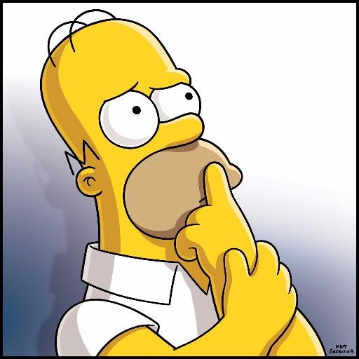

Влад
Сюжет
Шрек — огромный зелёный огр (великан-людоед из западноевропейских сказок), который живёт в одиночестве на болоте в окрестностях города-государства Дюлок, населённого людьми, животными, куклами и др. из разных европейских сказок и легенд (напр. Красная Шапочка, Пиноккио, три слепых мышки из английского детского фольклорного стихотворения). Людей он, по доброте душевной и вопреки бытующим убеждениям, не ест, поэтому изредка наведывающиеся на болото компании «охотников за ограми» он пугает, и его самолюбие греет их ужас.